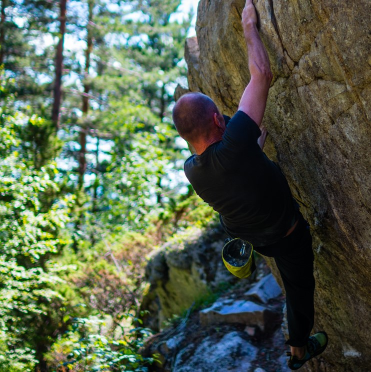
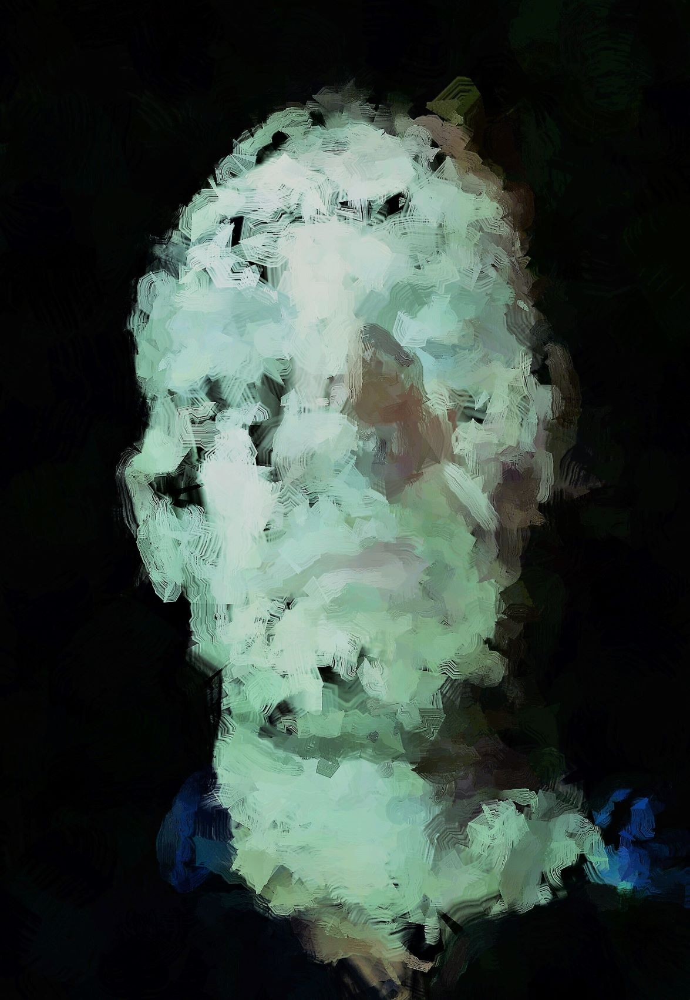

Ækte Falsk Kunst
Jeg bruker foto og maleri som jeg har tatt eller laget selv,
og manipullere de i div programmer. Bruker telefonen, nettbretet og PCen.


"Selvportret"
"Done"
Andre ting jeg driver med er klatring. Mest inne og litt ute også buldre ute, hytta er flitig brukt
når jeg lager bilder. Er ute i skogen og marka. Og vedhogst til eget bruk.
Linker:
NRK Radio